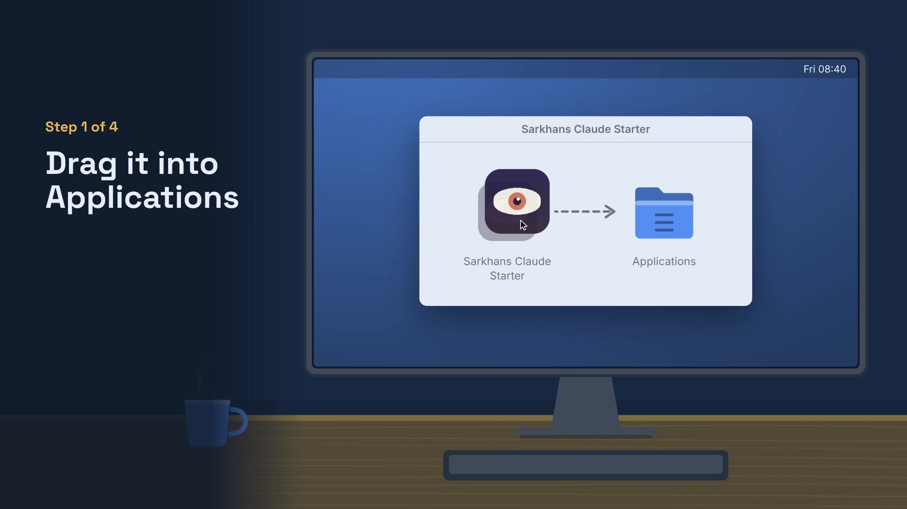

Rules Claude Code can't skip, a team of specialist agents, and a report on every change. Add it to Claude Code on any system, or set up all your projects at once with the free Mac app.
Instructions alone are suggestions. Each line below is enforced by a hook: Claude is stopped, gets the reason, and has to fix the cause.
| Rule | What Claude tried | What happens instead |
|---|---|---|
| Secrets | Read .env | Uses .env.example and the config module. |
| Main branch | git push origin main | Pushes a feature branch and opens a pull request. |
| Invented code | import pad from "left-pad" | Checks what's really installed before using it. |
| Your name on commits | Co-Authored-By: Claude | Commits read as yours, with no AI mention. |
| Comments | // TODO fix later | Finishes the work or tells you what's left. |
| Swallowed errors | catch {} | Handles the error or passes it on with context. |
| Your design | Edits tailwind.config.ts | Waits until you ask for a design change. |
| Database | price FLOAT in a migration | Uses a decimal type and gets a schema review. |
| "Done" too early | Finishes with type errors | Sent back to fix them before it can stop. |
Your code stays untouched. The app adds a short CLAUDE.md and a .claude folder to each project, hidden from git. The plugin needs no files in your projects at all.
What Claude reads
Third eye, clean code, testing, security, git and design rules. About 2,800 tokens per session; detailed rules load only for matching files.
Who does the bigger work
An architect plans, specialists build in parallel, a reviewer checks every result. Reviewers keep notes per project and get sharper over time.
What can't be skipped
Checks on every edit and command, in TypeScript, Go, PHP, Python, Rust, Java and more. They block, explain and make Claude fix the cause.
Small fixes shouldn't need a committee. Big changes should. Choose per project.
Claude edits freely and uses agents only when they help. Safety checks and git rules stay on.
Small changes directly; bigger work goes to the agent team with a plan and an independent review.
Every change goes through the agent team: plan, build, independent review. Slowest, most thorough.
Both give Claude the same rules, agents, skills and guardrails. The app adds a window to manage many projects and your team.
| Feature | Plugin | Mac app |
|---|---|---|
| Works on | Windows, Linux and macOS | macOS 13 or newer |
| Install | Two commands in a terminal | Download, allow once |
| Rules, agents, skills, guardrails | Yes, in every project | Yes, in the projects you pick |
| Stack detection and project commands | No | Yes |
| Work mode per project | In .claude/hooks/config.json | A switch in the app |
| Weekly report of what was stopped | No | Yes |
| Shared team rules | No | Yes |
| Updates | Through /plugin in Claude Code | Automatic |
You'll need Claude Code with a Claude Pro, Max, Team or Enterprise plan. The app installs Claude Code, Node.js and Git for you if they're missing.

Open Sarkhans-Claude-Starter.dmg and drag the app onto Applications. No admin rights? Use the Applications folder inside your home folder.
macOS 13 or 14: right-click, then Open.
Choose your projects folder and the language Claude explains things in. Select projects, press Set up, then Open in Claude Code.
Why the extra step? macOS shows a plain Open button only for apps notarized through a paid Apple developer account. This app is free, so macOS asks once. After that it opens normally and updates itself.
Give everyone on your team the same checks and the same way of working with Claude, and share your own conventions from one place.
Shared from one folder
Keep your conventions in a shared folder, such as a git repository. Every project of every teammate gets them and updates itself when they change.
Set once for everyone
The team folder sets the default work mode, the language Claude explains things in and the skills each new project gets.
App or plugin
Mac users get the app, everyone else the plugin with the same guardrails. Shared team rules sync through the app.
team-rules/
team.json name, default work mode, language
rules/
api.md your API conventions
naming.md your naming rulesNo. The starter only adds rules for Claude Code, and the app checks GitHub for updates. The log of what the guardrails stopped stays on your Mac.
No. The app adds a short CLAUDE.md and a .claude folder, hidden from git by default. Your own CLAUDE.md is never touched, and Remove takes everything out again.
The rules and hooks cover any project. TypeScript and Next.js, Go, PHP with Laravel or Symfony, Python with Django or FastAPI get extra checks, and Rust, Java, Kotlin, .NET, Ruby, Dart and Swift are recognized too.
The app checks for new versions by itself and shows an Update button; set-up projects get the new rules automatically. The plugin updates through /plugin in Claude Code.
Yes. Pick the language for explanations and reports during setup or per project. Code, commits and pull requests stay in English.
Free and open source under the MIT license.